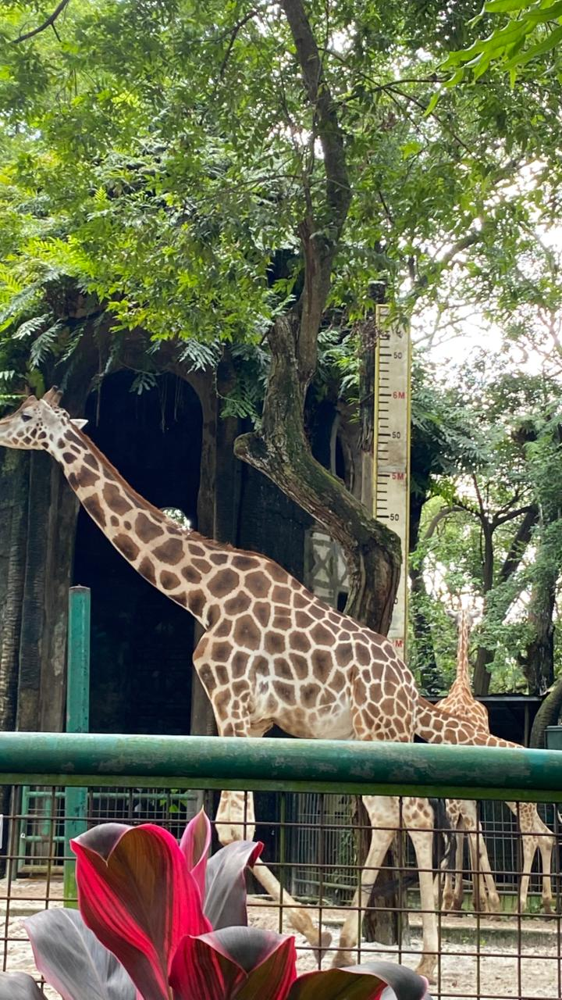

Giraffe

- Scientific Name: Giraffa camelopardalis
- Habitat: Savannas and open woodlands across Africa.
- Fun Fact: Giraffes only need 5 to 30 minutes of sleep in a 24-hour period! They often take quick naps that last only a minute or two, sometimes even standing up.
- Conservation Status: Vulnerable
← Back to Animal List